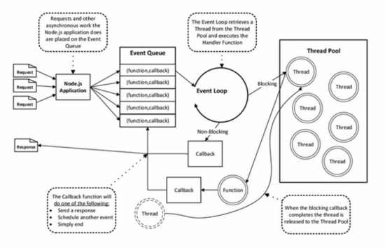

比较经典和精简的教程，先直接发链接： http://tutorials.jenkov.com/java-nio/
NIO的实现不复杂，但是其体现了一个统一、可伸缩的面向数据/信息流的设计思想 例如，换用消息队列，就可以扩展到分布式系统里去
一些思考点
- Channel和Stream有什么不同？
- Channel双向，Stream一般单向
- Channel支持异步
- Channel搭配Buffer使用
- ServerSocketChannel和SocketChannel有什么不同？
- SocketChannel用于单个连接
- ServerSocketChannel用于监听端口，对每一个接受的连接创建一个SocketChannel
- FileChannel.transferTo(…, SocketChannel)有什么需要注意的？
- SocketChannel非阻塞且发送缓冲已满，可能只传输部分
- SocketChannel的blocking和non-blocking模式有什么不同？
- 相对于阻塞，connect()直接返回，需要后继调用finishConnect()判断成功
- write()/read()可能未实际读写就返回
- ServerSocketChannel的blocking和non-blocking模式有什么不同？
- 相对于阻塞，accept()直接返回，如没有接受连接，返回null
- write()/read()可能未实际读写就返回
- Blocking模式Socket有什么问题？
- 一般会用一个线程处理一个连接，所以支撑的连接数非常有限
- 如果使用连接池复用活动连接，一些慢速或者非活动连接可能会占满连接池
- Non-blocking模式Socket有哪些挑战？
- 读到的字节流拆分Message：文章提到了TLV，但最好用长度+内容+校验构成
- 长度：TLV中的L
- 内容：类型是包含在这里面的，比如protobuf协议
- 校验：用于验证数据错误，或者网络错误，通知重传
- 读写的Message要有长度限制，否则一个伪造的字节流就能把服务器撑垮
- 一般会定义一种特定Message，专门用来拆分大的其它Message，长度和校验部分机制不变，内容部分构成如下
- 总段数
- 本段序号
- 本段内容
- 一般会定义一种特定Message，专门用来拆分大的其它Message，长度和校验部分机制不变，内容部分构成如下
- 发送方不能把所有的Channel都注册到Selector，因为Selector.select()时，可能大部分Channel都可写，全部返回，性能低下
- 当本Channel对应缓冲区有待发送数据时，才注册到Selector
- 当缓冲区数据发送完毕时，从Selector取消注册
- 读到的字节流拆分Message：文章提到了TLV，但最好用长度+内容+校验构成
- Selector有哪两种底层实现？
- Reactor：轮询Channel对应底层IO句柄。当连接数过多时，性能低下。这个可以算是多路复用，因为select()时还是有等待的过程
- e-poll：注册回调函数，只有当有对应事件发生时，才通知Selector。这个算是真正的异步。Linux直接支持
- 阻塞/非阻塞，同步/异步
- 阻塞：调用io函数会一直等待，比如System.in.read()
- 非阻塞：调用io函数，只读写可以读写的部分，然后立刻返回，比如NIO
- 同步：用等待或者轮询的方式拿到结果，比如NIO
- 异步：当时不用拿到结果，事后再获取结果，或者等到结果通知。使用Future或者Callback，比如AsynchronousFileChannel
- 额外提一下Node.js的线程模型
- 